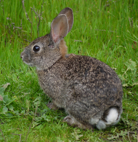

El conejo matorralero (Sylvilagus bachmani) es un leporídeo del occidente de Estados Unidos y México. Vive en chaparrales y matorrales de Oregon, California y en la península de Baja California en México Este conejo es de tamaño pequeño. Tiene un color pardo claro, las patas posteriores son cortas, delgadas y no poseen un pelaje denso; las orejas son de medianas ligeramente puntiagudas, con pelo esparcido en la superficie interior; la cola es pequeña, presenta un color oscuro en la parte dorsal y blanco por en la parte ventral.
Caracteristicas